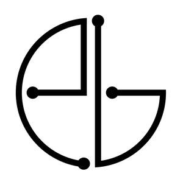

Trade Mark Journal No.2026/003 16 January 2026
UK00004315142 23 December 2025 (9,10,42,44)

- Class 9
- Computer software; computer software for implantable electronics; downloadable software; downloadable mobile applications; software for collecting, analysing, transmitting and displaying physiological, biometric, neurophysiological, and bioelectrical signals; software for medical data integration, data analytics, visualisation, and remote patient monitoring; software for device calibration, control, and telemetry; software for clinical decision support; software for clinical trials and electronic data capture; software for data encryption, cybersecurity and access control in relation to medical data; software for communication between implantable medical devices and external devices; application programming interfaces (APIs) for use in connection with medical and healthcare software; firmware for implantable medical devices; cloud-based software; gateways and hubs for connected medical devices; wireless communication devices for the transmission of data; recorded computer firmware for implantable and wearable devices; electronic publications (downloadable) relating to medical device operation and digital health; downloadable instructional materials in electronic form relating to medical devices; downloadable patient care protocols and clinical guidelines in electronic form; data storage media containing recorded software for medical use; downloadable cloud-based software platforms for medical data integration and remote patient monitoring; electronic sensors and detectors for use with medical devices; data processing equipment; computer hardware for use with medical devices.
- Class 10
- Medical and surgical apparatus and instruments; implantable medical devices; implantable bioelectronic devices; artificial implants; orthopaedic implants; implantable sensors; medical monitoring devices; wearable medical devices; patient monitoring systems; medical devices for post-operative recovery; rehabilitative medical devices; diagnostic medical devices for measuring physiological signals; surgical tools and accessories for implanting devices; surgical kits for the placement of implantable electronics; biocompatible housings for implantable medical electronics; electronic medical apparatus and devices; medical device chargers, programmers and controllers; medical device docking stations; medical leads, connectors and cables; sterilised packaging for medical implants; bioactive implants; bone-growth stimulation devices; medical devices for electrical stimulation of tissue; implantable neurostimulation devices; implantable electrodes; orthopedic fixation devices incorporating electronics; implantable telemetry devices; implantable power sources for medical devices; medical apparatus for recording, transmitting and monitoring physiological data; medical devices and instruments for use in orthopaedic surgery; patient interface devices for use with implantable medical devices.
- Class 42
- Scientific and technological services; research and design relating to medical devices, digital health, bioelectronics and regenerative medicine; software as a service (SaaS); platform as a service (PaaS); provision of online, non-downloadable software for collecting, analysing, transmitting and displaying medical and physiological data; hosting platforms on the internet for medical data integration and remote patient monitoring; design and development of computer hardware and software for medical and healthcare applications; development and testing of medical devices, implantable electronics and digital health platforms; technical consultancy in the field of medical devices and bioelectronics; scientific research in the field of orthopaedics, bone healing and regenerative medicine; engineering services in the field of biocompatible electronics and microelectronics; scientific laboratory services; calibration, validation and verification services for medical devices; cloud computing services featuring health data and analytics; technical support and maintenance of software; data analysis services in the field of healthcare and medical research; electronic data storage of medical and healthcare information; software customisation services in the field of medical and healthcare applications; information, advisory and consultancy services relating to all the aforesaid services.
- Class 44
- Medical services; health care services; telemedicine services; remote patient monitoring services; provision of digital therapeutics; medical analysis and assessment services; clinical services using implantable and wearable medical devices; medical screening and diagnostic services; collecting and analysing medical information for diagnostic and treatment purposes; preparation of medical reports; advisory services relating to the use of medical devices; fitting and programming of medical devices; patient follow-up and care coordination; wellness monitoring; healthcare data review and alerts for clinicians; medical support for clinical trials; rental of medical equipment; orthopaedic consultation; post-operative care services; bone-healing and bone-regeneration treatment services; pain management services provided in connection with implantable medical devices; implantable device monitoring services; provision of medical information to patients and healthcare professionals relating to implantable devices and digital health platforms; information, advisory and consultancy services relating to all the aforesaid services.
Embed Biotech Limited
Representative: Osborne Clarke LLP